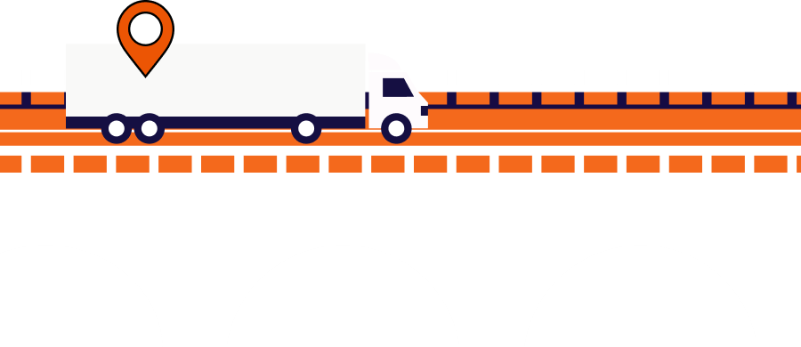
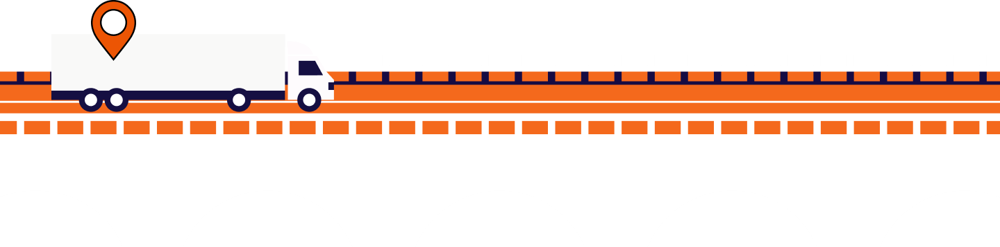
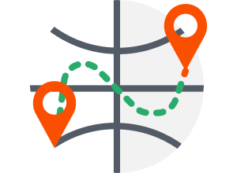
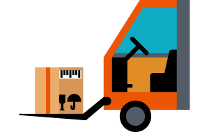

شرکت کاریار پردازان بهین سیستم در سال ۱۳۸۹ با هدف ارائه
راهکارهای نرمافزاری برای صنعت خودرو و قطعهسازی تأسیس شد.
این شرکت ابتدا با توسعه سیستمهای یکپارچه مدیریت (MIS)
فعالیت خود را آغاز کرد و سپس با ورود به حوزه لجستیک و
ردیابی، از فناوریهای IoT و مدل Just in Time برای افزایش
بهرهوری استفاده نمود.
در ادامه و با توجه به نیاز بازار حملونقل و مدیریت ناوگان،
این شرکت از سال ۱۳۹۹ ارائه راهکارهای تخصصی سختافزاری،
نرمافزاری و خدمات مرتبط با ردیابی و مدیریت ناوگان را به
صورت ویژه توسعه داد.


محصولات
سامانه ردیابی حملونقل بینالملل (FMS)
سامانه FMS یک راهکار مدیریت ناوگان مبتنی بر فناوری GPS و GPRS است که امکان ردیابی آنلاین وسایل نقلیه و نظارت بر اطلاعاتی مانند موقعیت خودرو، مسیر حرکت، سرعت، مسافت طیشده و وضعیت سنسورها را فراهم میکند.
این سامانه مطابق با الزامات سازمان راهداری و استانداردهای بینالمللی حملونقل مانند AETR و کارنه تیر طراحی شده و دارای مجوز رسمی از سازمان راهداری و حملونقل جادهای است.
امکانات اصلی:
ردیابی آنلاین ناوگان روی نقشه
ارسال اطلاعات موقعیت و زمان رانندگی استانداردهای بینالمللی
گزارشگیری از مسیرها و توقفها
ارسال تنظیمات و پیام به ردیاب

نرمافزار سیستم اطلاعات مدیریت کاریار (MIS)
سیستم اطلاعات مدیریت کاریار (MIS) به هدف کمک به کاهش هزینهها، بهبود تصمیمگیری و مدیریت بهتر اطلاعات سازمانی توسعه یافته است. این نرمافزار جامع، ابزارهای مورد نیاز برای جمعآوری، پردازش، گزارشدهی و تحلیل اطلاعات را فراهم میکند.
شرکت کاریار پردازان بهین سیستم با تکیه بر تجربه اجرایی در صنعت و فناوری اطلاعات، این راهکار را برای صنایع مختلف از جمله خودرو، قطعهسازی، غذایی، نساجی و شیمیایی ارائه کرده است.
زیرسیستمها:
اطلاعات پایه
تولید
انبار
تضمین و کنترل کیفیت
برنامه ریزی
اقدامات پیشگیرانه
مالی
آموزش
کنترل مدارک
محصول
مدیریت توشه و ناوگان (FLM)
سامانه مدیریت توشه و ناوگان (FLM) .با هدف بهبود فرآیندهای لجستیک، توزیع و حملونقل کالا طراحی شده است. این سامانه به مدیران کمک میکند تا با نظارت بر اطلاعاتی مانند زمان سفر و توقف، سرعت تحویل، مسیرهای طیشده و عملکرد ناوگان، تصمیمگیری دقیقتر و مدیریت موثرتری داشته باشند.
FLM همچنین امکان مدیریت همزمان مأموریتها و واکنش سریع به شرایط مختلف مانند خرابی خودرو، تأخیر یا تغییر وضعیت نقاط تحویل را فراهم میکند و به افزایش سرعت توزیع، کاهش هزینهها و بهبود رضایت مشتریان کمکمیکند.

سامانه نوبتدهی و مدیریت تاکسی
سامانه نوبتدهی و مدیریت تاکسی، راهکاری یکپارچه برای مدیریت هوشمند رانندگان، صفهای تاکسی و سفرها است.
این سامانه با ارائه اپلیکیشن راننده و ناظر، فرآیندهای نوبتدهی، مسافرگیری، ردیابی و محاسبه کرایه را بهصورت دیجیتال مدیریت میکند
و امکان نظارت لحظهای بر عملکرد ناوگان را فراهم میسازد.
امکانات اصلی:
اپلیکیشن اختصاصی راننده و ناظر
ردیابی لحظه ای رانندگان در زمان فعالیت
مدیریت هوشمند صف ها و فراخوان خودکار رانندگان
ثبت و مدیریت سفر ها
محاسبه خودکار کرایه با تاکسی متر
ارسال پیامک رسید سفر برای مسافران
نظارت زنده و گزارش گیری از عملکرد رانندگان ، صف ها و سفر ها
مدیریت و تنظیمات مرکزی از راه دور شرکت ها و بهره برداران
مجوز خدمات شرکت کاریار پردازان بهین سیستم،
جهت ارائه خدمات سامانه نظارت برخط(آنلاین) ناوگان
بینالمللی که از سازمان راهداری و حمل و نقل
جادهای اخذ شده است.
تماس با ما
از راههای زیر میتوانید با ما در تماس باشید. تیم پشتیبانی کاریار در اولین فرصت به درخواستهای شما رسیدگی خواهند کرد.